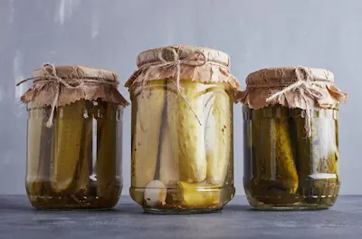

Probióticos Naturales: Salud Intestinal en Cada Bocado
El poder oculto de los alimentos fermentados
Los probióticos son microorganismos vivos que equilibran la microbiota intestinal, mejorando la digestión y fortaleciendo el sistema inmunológico. Mientras que el yogur es el más conocido, alimentos como el chucrut (repollo fermentado), el kéfir (bebida láctea o de agua) y el kimchi (vegetales coreanos fermentados) ofrecen una diversidad bacteriana aún mayor. Estos alimentos no solo preservan nutrientes durante el proceso de fermentación, sino que también generan enzimas y ácidos orgánicos que facilitan la absorción de minerales como el hierro y el zinc. Su consumo regular está asociado con la reducción de inflamación crónica y la prevención de trastornos digestivos como el síndrome del intestino irritable.
Además, los fermentados son una alternativa económica y sostenible. A diferencia de los suplementos probióticos comerciales, que pueden ser costosos y de eficacia variable, estos alimentos tradicionales han demostrado sus beneficios durante siglos. Prepararlos en casa es sencillo: solo requieren vegetales frescos, sal y paciencia. Por ejemplo, el chucrut casero fermenta naturalmente en un frasco hermético durante unas semanas, sin necesidad de aditivos. Esta accesibilidad los convierte en pilares de una dieta saludable, especialmente en épocas donde el estrés y los alimentos ultraprocesados dañan nuestra flora intestinal.
Cómo incorporarlos a tu rutina diaria
Introducir probióticos naturales en la dieta no requiere cambios radicales. Un desayuno con kéfir y frutas, una cucharada de chucrut en ensaladas o el kimchi como acompañante en platos principales son formas deliciosas de comenzar. Para quienes se inician, es clave empezar con pequeñas cantidades (1-2 cucharadas al día) para permitir que el intestino se adapte progresivamente. Combinarlos con prebióticos (fibra de ajo, cebolla o plátanos) potencia sus efectos, ya que estos actúan como "alimento" para las bacterias beneficiosas.
Es importante destacar que no todos los fermentados son iguales. Los productos pasteurizados o con vinagre (como algunos encurtidos comerciales) pierden sus probióticos durante el procesamiento. Lo ideal es optar por versiones artesanales, refrigeradas y sin conservantes. Con el tiempo, estos alimentos no solo mejoran la salud digestiva, sino que también diversifican el microbioma, lo que se relaciona con mejor humor, piel más sana y menor riesgo de enfermedades autoinmunes.
Beneficios adicionales para la salud mental
Estudios recientes vinculan una microbiota intestinal equilibrada con una mejor salud mental. Las bacterias beneficiosas en alimentos fermentados producen neurotransmisores como la serotonina, que regulan el estado de ánimo. Personas con depresión o ansiedad han reportado mejorías al incluir probióticos naturales en su dieta, sugiriendo un eje intestino-cerebro más fuerte. Este enfoque holístico refuerza la idea de que la salud intestinal es la base del bienestar general.
Fermentados en la cultura gastronómica mundial
Desde el miso japonés hasta el kvass ruso, cada cultura tiene sus propios fermentados. Explorar estas variedades no solo enriquece la dieta, sino que también conecta con tradiciones culinarias ancestrales. Muchas de estas recetas han sobrevivido por generaciones gracias a sus beneficios comprobados, demostrando que la comida es medicina. Incorporarlas hoy es un homenaje a esa sabiduría colectiva y un paso hacia una alimentación más consciente.